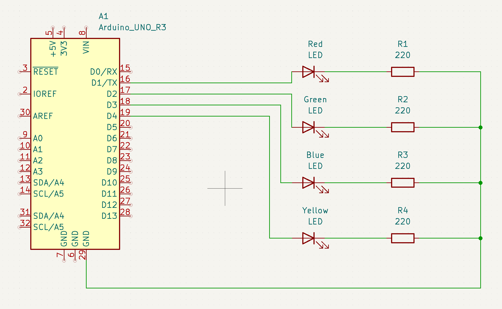
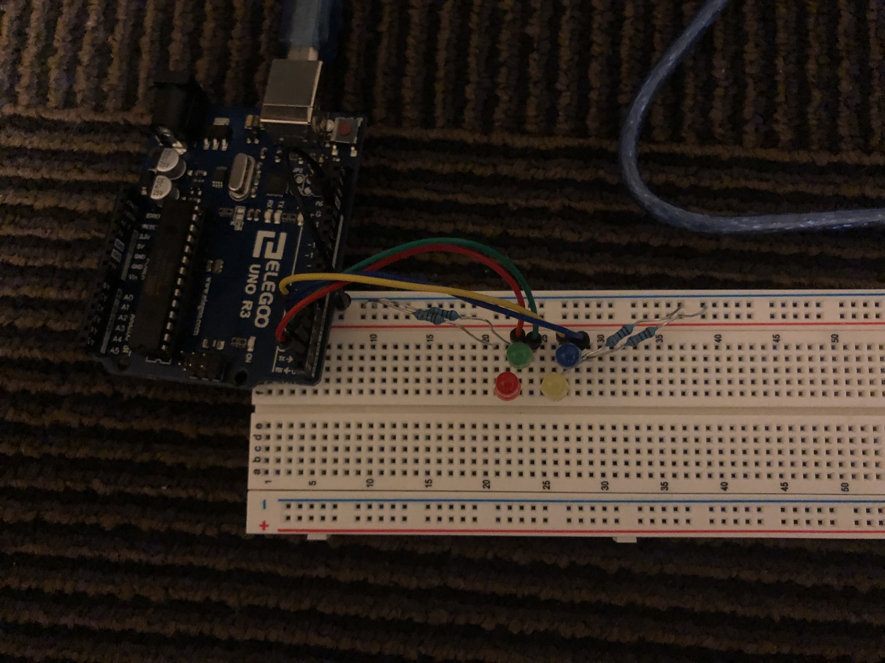

Richard's Assignment 1!

Here is all the documentation for assignment 1!

5V power, 1.8V LEDs, 20mA recommended current, 220Ω resistors.

Breadboard setup.
Code for this LED blinking pattern.
// Set each LED as an integer
int red = 1;
int green = 2;
int blue = 3;
int yellow = 4;
// Set up each LED with their relative pin
void setup() {
pinMode(red, OUTPUT);
pinMode(green, OUTPUT);
pinMode(blue, OUTPUT);
pinMode(yellow, OUTPUT);
}
// Codes for making the LED blink on a loop
void loop() {
// Loop that cycles through each LED from Red -> Green -> Blue -> Yellow and making them each blink on and off once
for (int i = 1; i <= 4; i ++) {
digitalWrite(i, HIGH); // Turn on current LED
delay(200); // Wait 200 ms
digitalWrite(i, LOW); // Turn off current LED
delay(0); // *No delay but kept line to play around with timer
}
// Turn on Red LED once after cycle to transition into next loop
digitalWrite(red, HIGH); // Turn on Red LED
delay(200); // Wait 200 ms
digitalWrite(red, LOW); // Turn off Red LED
// Loop that cycles through each LED from Yellow -> Blue -> Green -> Red and making them each blink on and off once
for (int i = 4; i >= 1; i --) {
digitalWrite(i, HIGH); // Turn on current LED
delay(200); // Wait 200 ms
digitalWrite(i, LOW); // Turn off current LED
delay(0); // **No delay but kept line to play around with timer
}
// Loop that cycles through duo LEDs and turning them on and off for 2 rotations (Yellow + Blue) & (Red + Green)
for (int i = 1; i <= 2; i ++) {
digitalWrite(yellow, HIGH); // Turn on Yellow LED
digitalWrite(blue, HIGH); // Turn on Blue LED
delay(200); // Wait 200 ms
digitalWrite(yellow, LOW); // Turn off Yellow LED
digitalWrite(blue, LOW); // Turn off Blue LED
delay(200); // Wait 200 ms
digitalWrite(red, HIGH); // Turn on Red LED
digitalWrite(green, HIGH); // Turn on Green LED
delay(200); // Wait 200 ms
digitalWrite(red, LOW); // Turn off Red LED
digitalWrite(green, LOW); // Turn off Green LED
delay(200); // Wait 200 ms
}
}